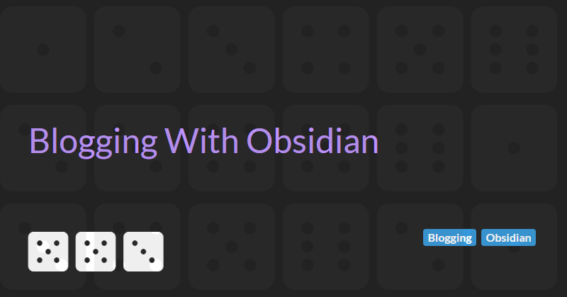

Blogging With Obsidian
In previous articles I've wrote about Blogging with GitHub and Markdown, Generating a Static Website Using Markdown, and Deploying a Static Website to GitHub Pages.
In this article I discuss taking this to the next level by leveraging the capabilities of the Obsidian note taking tool to create and manage your blog content.
VSCode versus Obsidian for Markdown editing
Previously I had recommended using Visual Studio Code to create the Markdown content for your blog. VSCode is a great tool. As a developer, you are already probably already using and it natively supports Markdown.
However, since I started using Obsidian for personal knowledge management I found that the Markdown editing experience in Obsidian is far superior.
- Obsidian has much better support for frontmatter properties - allowing you to define and validate that your blog articles have correct and valid attributes and tags
- The auto complete functionality in Obsidian makes linking articles super simple and error free
- The general Markdown editing experience is better with Obsidian's live preview (no need to switch between VSCode's editing and preview modes)
- You can leverage Obsidian's templating features using the Templater community plugin to help create consistent articles that follow a predefined structure
In addition, its easy to transition from raw Markdown to Obsidian notes. You should be able to copy and paste from any existing Markdown file into a new Obsidian note.
Constructing Articles with Obsidian
Constructing blog articles with Obsidian is straight forward and simple.
If you are following the Zettelkasten note taking method then do your research and create atomic notes as you would usually do.
Once you have organised your thoughts, create an Output folder in your Obsidian knowledge base for your blog content and create a new note.
If you have a well-defined structure to your articles, use a template to create the basic outline of the article. As a minimum this template should contain a standard frontmatter properties such as title, description, publication date, tags, and status.
Using a status property with values of Draft and Published can help control when articles are published to your blogs. Set the status to Draft when working on the article.
Use your notes to guide your writing.
Finally update the article's status to Published when the article is ready to appear on your blog. The tooling that generates your blog content can use the status to know which articles to generated (see Generating a Static Website using Markdown)
Publishing Articles Created with Obsidian
Publishing articles created with Obsidian follows a similar process to the flow that I outlined in Generating a Static Website using Markdown and Deploying a Static Website to GitHub Pages.
Use the Obsidian Git community plugin to publish your personal knowledge base and blog articles to GitHub.
Once your blog article Markdown files are published in a GitHub repository it should be easy to transform the content to HTML and publish to GitHub pages.
Next Steps
If you are already following my guidelines and using GitHub and Markdown to build your blog then transitioning to using Obsidian as your Markdown editor of choice should be simple and straight forward.
If you are not publishing your thoughts yet then why not start today?